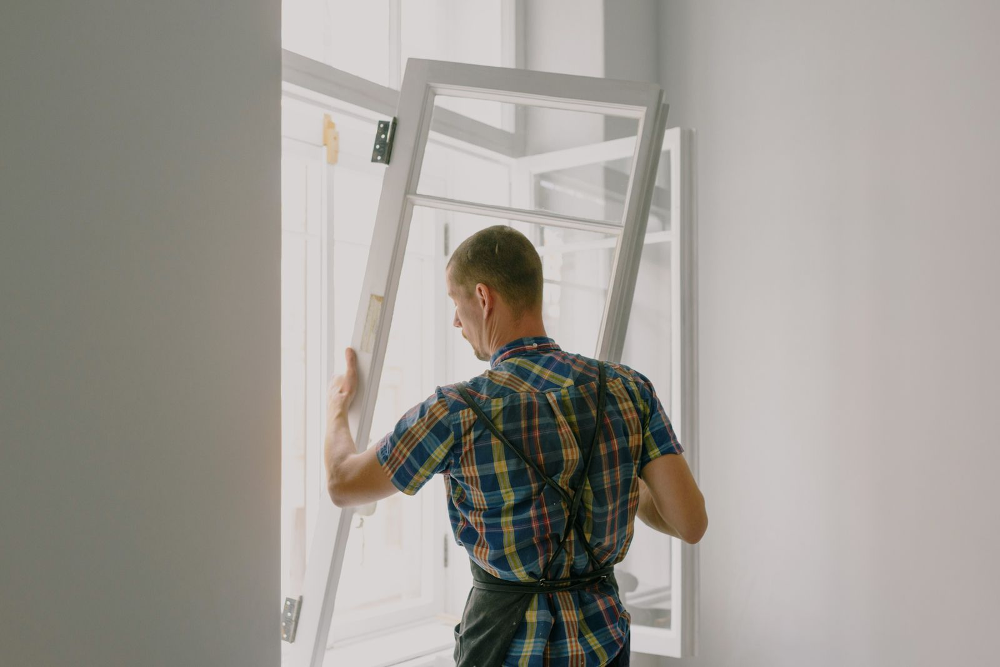

Испратете димензии
Измерете ширина и висина или испратете фотографии од прозорците што треба да се заменат.
Професионална замена на прозорци
Изберете ПВЦ или алуминиумски профили според вашиот дом, цена и потреба. Испратете димензии или фотографии преку WhatsApp и добијте јасна понуда во рок од 24 часа.
Испратете фотографија или димензии, добијте препорака за профил и јасна понуда за изработка и монтажа.
Измерете ширина и висина или испратете фотографии од прозорците што треба да се заменат.
Ви препорачуваме ПВЦ или алуминиумски профил според потребата, изгледот и цената.
Добивате понуда со материјал, цена за монтажа и најбрз можен термин за изведба.

Квалитетни профили со добар оков, стабилност, подобра изолација и модернен изглед.
Внимателно вадење на старите прозорци, правилно поставување, фиксирање и дихтување.
Дополнителна заштита, приватност и комфор, со решение што одговара на прозорецот.
Профилите се избираат според објектот, саканиот изглед, изолацијата и цената. Во понудата може да се вклучат стандардни ПВЦ профили, премиум ПВЦ системи, алуминиумски профили, антрацит завршна обработка, бела боја и дополнителни опции.
 ПВЦ профилиПрактичен избор за топлинска и звучна изолација, погоден за станови и куќи.
ПВЦ профилиПрактичен избор за топлинска и звучна изолација, погоден за станови и куќи. Премиум профили и оковПовеќекоморни профили, квалитетен оков и стакло според потребата на клиентот.
Премиум профили и оковПовеќекоморни профили, квалитетен оков и стакло според потребата на клиентот. Алуминиумски системиСтабилно решение за поголеми отвори, модернен изглед и долготрајна употреба.
Алуминиумски системиСтабилно решение за поголеми отвори, модернен изглед и долготрајна употреба.
Добро дихтување и правилна завршна обработка се клучни за изолација и долготрајност.
Рамот се поставува внимателно, се усогласува и се фиксира за сигурно користење.
Квалитетен прозорец не е само рам и стакло. Важни се профилот, оковот, правилното поставување, дихтувањето и завршната обработка.
Побарај понуда
Пополнете ја формата и WhatsApp автоматски ќе се отвори со подготвена порака. Во пораката ќе бидат внесени името, телефонскиот број, димензиите и забелешката.